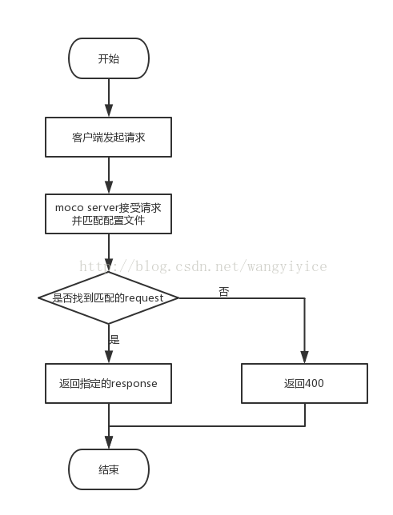
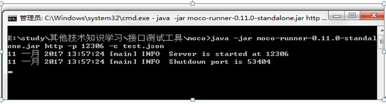
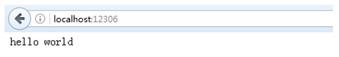

moco 入门实践
- Moco is an easy setup stub framework.
- 参考
Moco是什么
Moco 是一个搭建模拟服务器的工具，Moco可以独立运，通过运行一个 jar 包开启服务。
Mocok可用于进行接口测试（如：该接口调用其他接口），不用修改数据库数据，构建接口返回假数据，来验证接口的正确性。
Moco也可用于前端功能开发联调（接口未开发好）和测试（模拟较难触发场景）中，通过构建接口返回假数据，来验证前端页面内容展示的正确性。
前提条件：接口文档需要提前确定好。
Moco独立运行工作原理
moco主要是通过将配置放入json文件中，启动moco的时候，需要指定使用的配置文件路径，这样配置就可以生效了

Moco独立运行环境搭建
第一步：搭建Java运行环境
打开cmd窗口，通过java –version 检查是否成功安装jdk。若没安装，则安装jdk并配置环境变量。
jdk下载地址为：
http://www.oracle.com/technetwork/java/javase/downloads/jdk8-downloads-2133151.html，选择适合自己电脑系统的版本进行下载安装。
第二步：下载 moco-runner-0.11.0-standalone.jar
地址：
第三步：新建一个文件夹（如moco），将moco-runner-0.11.0-standalone.jar放到此目录
第四步：在moco目录下创建一个json配置文件，输入以下内容：
1 2 3 4 5 6 7 8 | [ { "response": { "text":"hello world" } } ] |
第五步：启动moco服务命令
-
启动单个json配置文件命令：
1
java -jar moco-runner-0.11.0-standalone.jar http -p 12306 -c test.json
启动成功截图如下

备注：可进入json文件所在目录，按shift+右键点击弹出菜单》点击“在此处打开命令窗口”打开命令行
-
启动全局配置文件 global.json（引用多个配置文件）命令：
1
java -jar moco-runner-0.11.0-standalone.jar http -p 12306 -g global.json
具体使用见第四部分-项目实践
第六步：浏览器访问 moco-runner sever
http://localhost:12306/

备注：启动服务之后，必然会根据需求stub出各种各样接口反馈， moco服务可以检测到配置文件的变更，假如你修改了配置文件，不需要重新启动moco，服务照样可以生效。
常用的配置示例
参考moco官方文档： https://github.com/dreamhead/moco/blob/master/moco-doc/apis.md